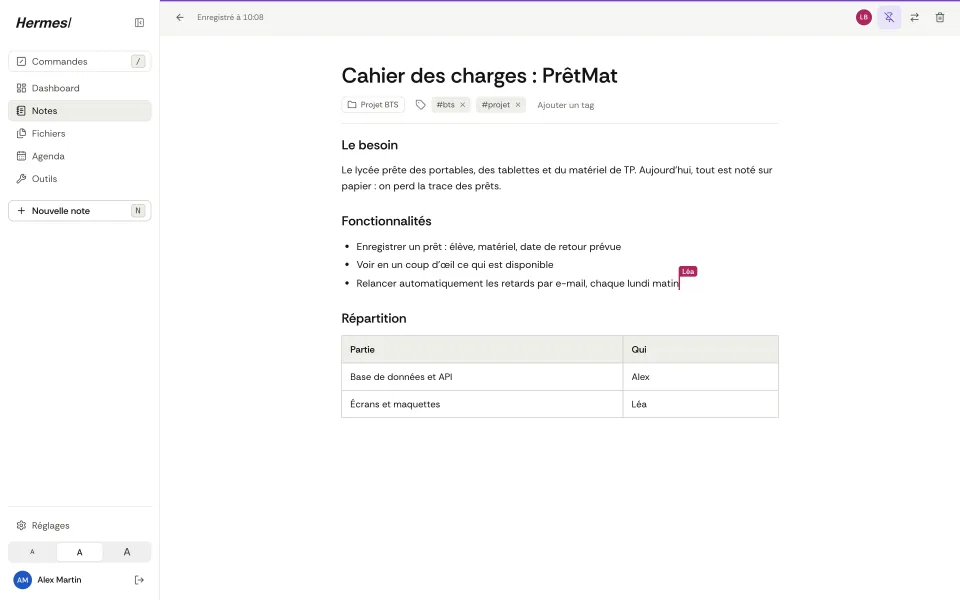
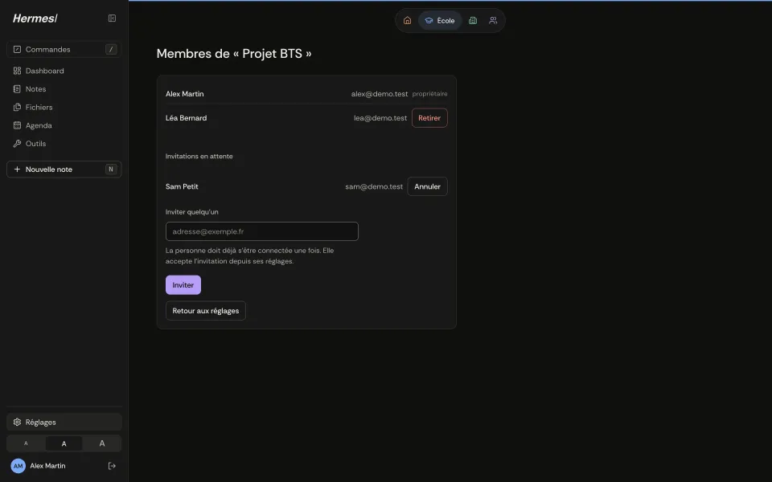
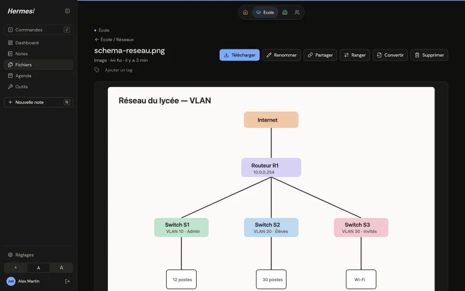
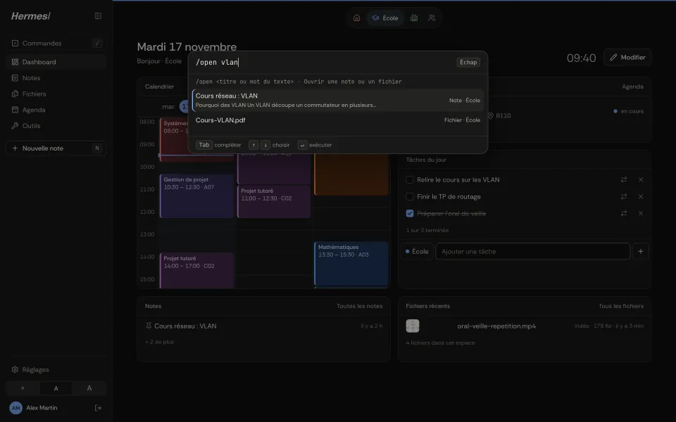
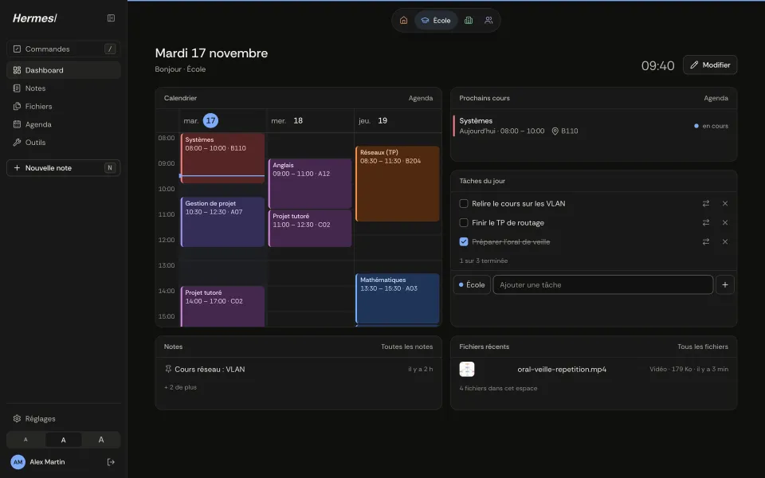
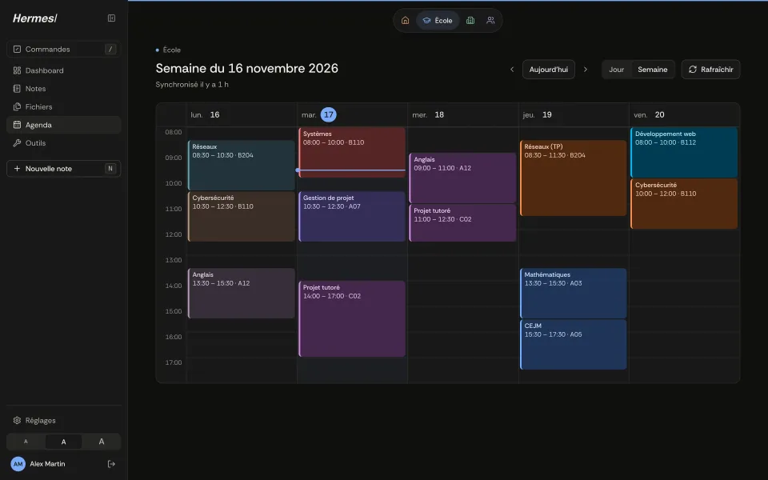
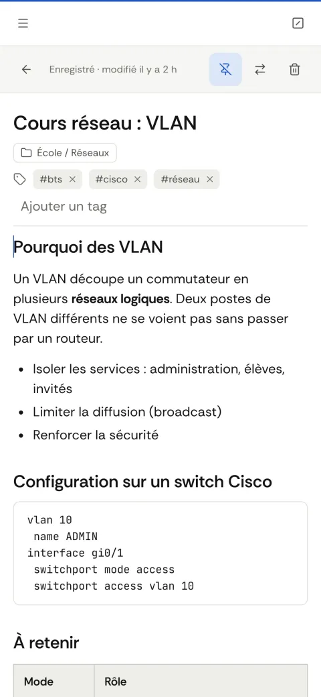
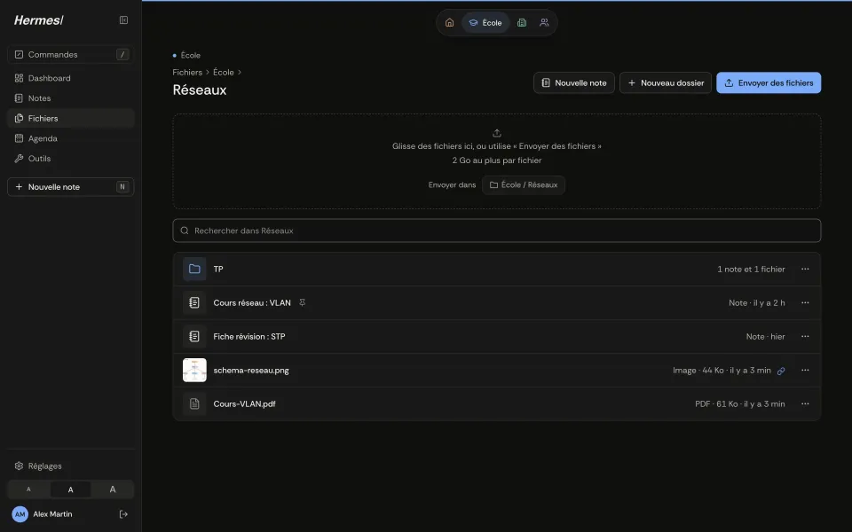
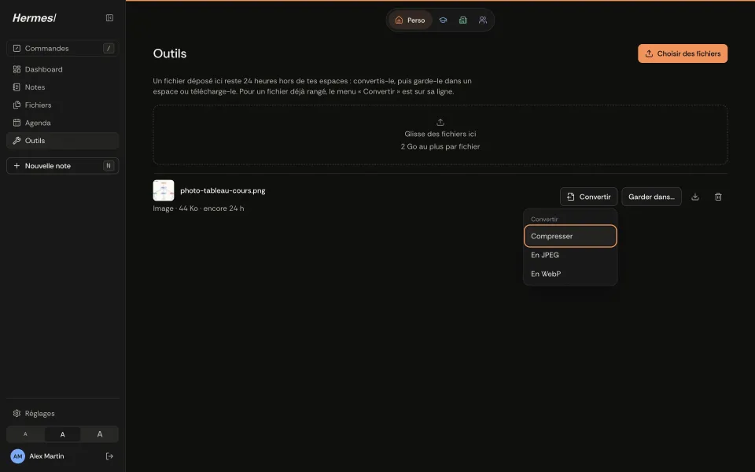
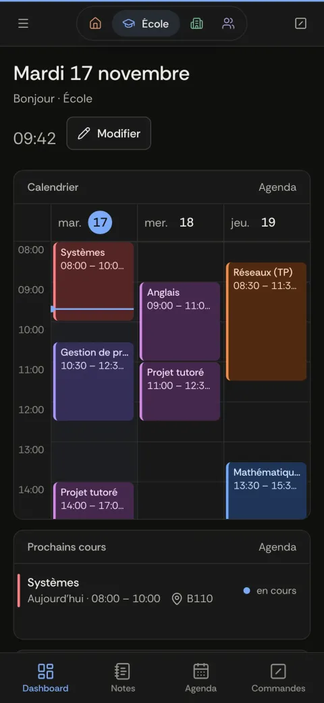

Open source · auto-hébergé · v2 en cours
Un tableau de bord pour chaque partie de sa vie.
Images : NASA, filmées depuis la Station spatiale internationale (domaine public, images.nasa.gov).
Nouveautés
Toute la feuille de route-

16 novembre 2026
Une note écrite à plusieurs
Comme dans un Google Doc : le texte de l'autre arrive pendant qu'il tape, avec son curseur et son prénom.
-

16 novembre 2026
Des espaces partagés
Sur invitation : notes, fichiers, dossiers et tâches deviennent communs, l'agenda reste à chacun.
-

15 novembre 2026
Un fichier partagé par lien
Valable une heure, un jour ou sept jours, révocable. La page du lien ne montre que le nom et la taille.
-

13 novembre 2026
Tout au clavier
« / » ouvre une barre de commandes : ouvrir une note, ajouter une tâche pour demain, changer d'espace.
Tout ce qui sert au quotidien, rangé par espace
-

Un dashboard par espace
École, Entreprise, Perso ou ceux qu'on crée : chacun sa grille de widgets, qu'on déplace et agrandit.
-

L'agenda, Pronote et Google
Pronote importé par son lien, ses propres événements, copiés dans Google Agenda si on le relie.
-

Des notes façon Notion
Le texte se met en forme pendant qu'on écrit, et « / » ouvre les blocs. Le Markdown reste le format enregistré.
-

Fichiers et dossiers
Tags, recherche, aperçu des photos, vidéos et PDF, partage par un lien qui expire.
-

Des conversions à part
Photos, vidéos, sons, PDF et documents, convertis dans un service isolé, sans réseau.
-

Comme une app sur iPhone
Installée sur l'écran d'accueil ; un balayage pour changer d'espace.
Pilotable par Claude ou par son propre assistant
Les actions du site passent aussi par une API et un connecteur Claude, avec les mêmes droits et les mêmes limites. Écrit et testé, en service à la prochaine mise à jour.
Chacun son accès
Un jeton ou une autorisation par compte, révocable à tout moment. L'assistant ne voit que les espaces de ce compte.
Une corbeille de 30 jours
Une suppression se rattrape, qu'elle vienne du site ou d'un assistant, et la corbeille dit par où elle est passée.
Le compte reste à soi
Mot de passe, connexions, jetons et effacement définitif ne passent jamais par l'API.
Léger, rapide, et rien à exposer
Un seul binaire Rust, une base SQLite sauvegardée chaque nuit sur un second disque, et aucun port ouvert sur la box.
Mesures de l'application sur le serveur réel, via Cloudflare, en 4G simulée. Rust, axum, SQLite, htmx.
Une version à la fois
v1 · Dashboard, notes, emploi du tempsen service
v2 · Fichiers, outils, espaces partagés, Google Agendaen service ; connecteur Claude, corbeille et API complète à la prochaine mise à jour
Ensuite · Installation en une commande, OCR, médias, audio, puis un assistant qui cherche dans les notes
Chez soi, sur un vieux PC ou un mini-serveur
# Récupérer le code (branche v1) et le configurer git clone -b v1 https://github.com/moreauremi/dashu.git && cd dashu cp .env.example .env # Lancer (Docker) puis créer son compte docker compose up -d --build docker compose exec dashu /dashu set-password toi@example.com
Variables, installation sans Docker, tunnel Cloudflare et sauvegardes : tout est dans le README.